pacman::p_load(tidyverse)01: A Layered Grammar of Graphics: ggplot2 methods
1 Learning Outcome
In this chapter, we will learn the core concepts of ggplot2 and practise using them to create statistical graphics based on the Layered Grammar of Graphics. Layered Grammar of Graphics is a framework that breaks a graph into key components such as data, aesthetic mappings, and geometric objects etc., that allows users to create flexible and effective plots. By the end, we will be able to produce elegant and effective visualisations using ggplot2.
2 Getting Started
2.1 Installing and Loading the Required Libraries
Before getting started, let’s install and load the required R packages into R environment. In this exercise, we need to install and load tidyverse.
| Package | Description |
|---|---|
| tidyverse | A collection of R packages for data importing, cleaning, transformation, and visualisation (e.g., readr, dplyr, tidyr, ggplot2. |
2.2 Importing Data
We import the exam data in csv format using the function read_scv() from readr package, that is part of the tidyverse family.
| ID | CLASS | GENDER | RACE | ENGLISH | MATHS | SCIENCE |
|---|---|---|---|---|---|---|
| Student321 | 3I | Male | Malay | 21 | 9 | 15 |
| Student305 | 3I | Female | Malay | 24 | 22 | 16 |
| Student289 | 3H | Male | Chinese | 26 | 16 | 16 |
| Student227 | 3F | Male | Chinese | 27 | 77 | 31 |
| Student318 | 3I | Male | Malay | 27 | 11 | 25 |
| Student306 | 3I | Female | Malay | 31 | 16 | 16 |
The import message indicates that the CSV file contains 7 columns. Four columns are of categorical attribute (chr) (ID, CLASS, GENDER, RACE) representing basic student information, while the remaining three columns are of continuous type (dbl), students’ exam results for ENGLISH, MATHS, and SCIENCE.
3 Introducding ggplot2
ggplot2, part of the tidyverse family, is designed based on the Grammar of Graphics for visual exploration and communication.
3.1 R Graphics VS ggplot2
The following histograms demonstrate the outputs by using functions from Base R and ggplot2.
hist(exam_data$MATHS)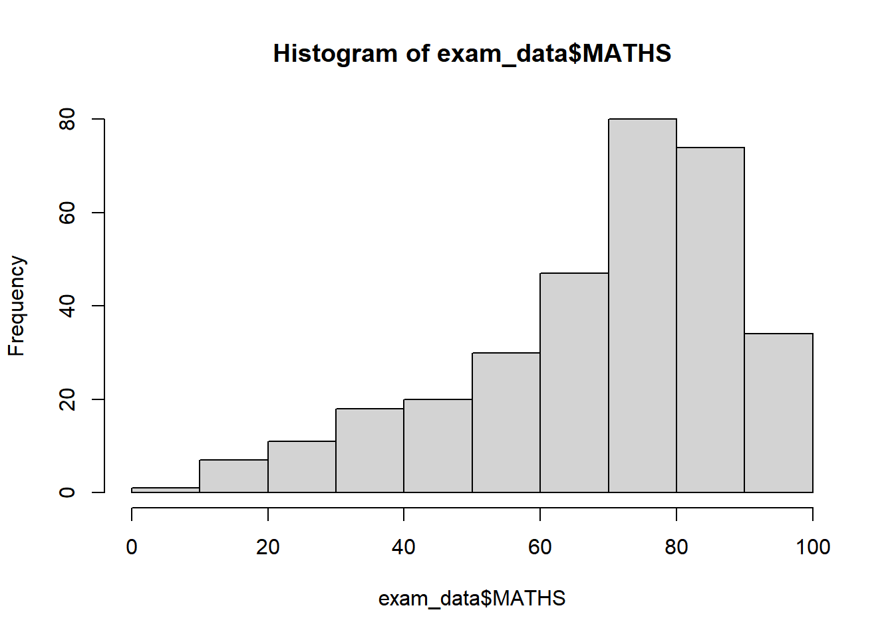
ggplot(data = exam_data, aes(x = MATHS)) +
geom_histogram(bins = 10,
boundary = 100,
colour = "black",
fill = "grey") +
ggtitle("Distribution of Maths Scores")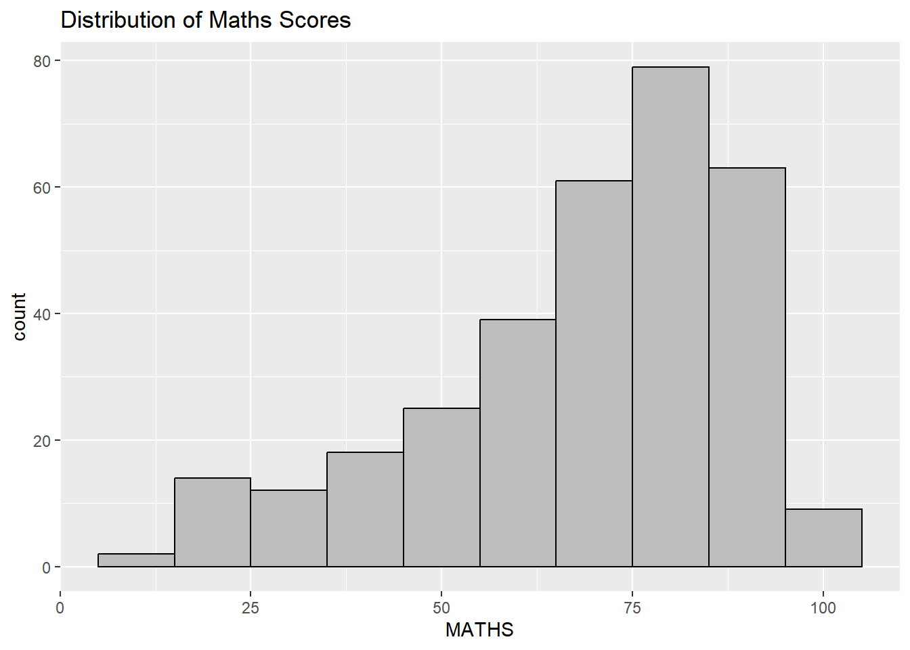
Important
As noted by the founder of the tidyverse, Hadley Wickham, even beginners should learn the more advanced ways of using ggplot2. This helps them understand how visualisations are constructed and how data columns or variables are mapped to geometric objects to convey meaningful information.
4 Grammar of Graphics
Before using ggplot2, it is important to understand the Grammar of Graphics.
The Grammar of Graphics is a framework for data visualisation that breaks graphs into components such as layers and scales. Introduced by Leland Wilkinson in 1999, it defines rules for combining mathematical and aesthetic elements to create meaningful statistical graphics.
Its key ideas are that graphics are built from layered elements and that meaning is conveyed through aesthetic mapping. This framework helps us understand complex plots and recognise well-formed graphics, though not all grammatically correct plots are necessarily meaningful.
4.1 A Layered Grammar of Graphics
ggplot2 implements Leland Wilkinson’s Grammar of Graphics and is built on seven key components (Wickham, 2010).
- Data is the dataset being plotted.
- Aesthetics map data variables to visual properties such as position, colour, and size.
- Geometrics define how data are displayed, for example points, bars, or lines.
- Facets split data into subsets to create multiple panels.
- Statistics apply data transformations such as means or confidence intervals.
- Coordinate systems control how data are positioned in the plot.
- Themes adjust non-data elements such as titles, axes, and legends.
5 Essential Grammatical Elements in ggplot2: data
The code chunk below creates a blank canvas by initialising a ggplot object with the data argument. Here, exam_data is used for plotting. If the dataset is not a data.frame, it will be converted automatically and internally using fortify().
ggplot(data=exam_data)6 Essential Grammatical Elements in ggplot2: aes()
Aesthetic mappings use data attributes to control visual properties such as position, colour, size, shape, and transparency.
All aesthetics are defined using the aes() function, and each geom layer can have its own mappings. The code chunk below adds x-axis and its label to the plot.
ggplot(data=exam_data, aes(x=MATHS))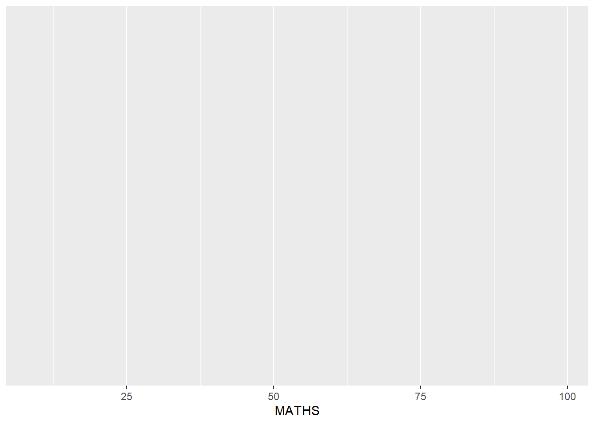
7 Essential Grammatical Elements in ggplot2: geom()
Geometric objects define the actual marks drawn on a plot. Common examples include: - geom_point() for points, - geom_line() for lines, - geom_smooth for trend lines, - geom_bar for bar charts, - geom_histogram() for histograms, - geom_polygon() for shapes, - geom_map() for map-based polygons, - geom_col() for bar charts where the height of each bar comes directly from the variable, - geom_boxplot() for box plot - geom_density() for kernel density estimate(KDE) - geom_abline() geom_hline() geom_vline() for horizontal, vertical, and diagonal reference lines
7.1 Geometric Objects: geom_bar() & geom_col()
ggplot(data=exam_data, aes(x=RACE)) + geom_bar()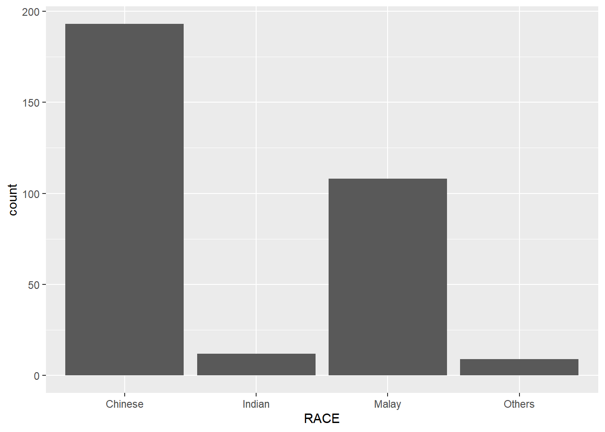
7.2 Geometric Objects: geom_dotplot()
In a dot plot, the width of each dot reflects the bin width, and dots are stacked so that each dot represents one observation. The plot created by using geom_dotplot() has a misleading y-axis.
ggplot(data=exam_data, aes(x=MATHS)) +
geom_dotplot(dotsize=0.5)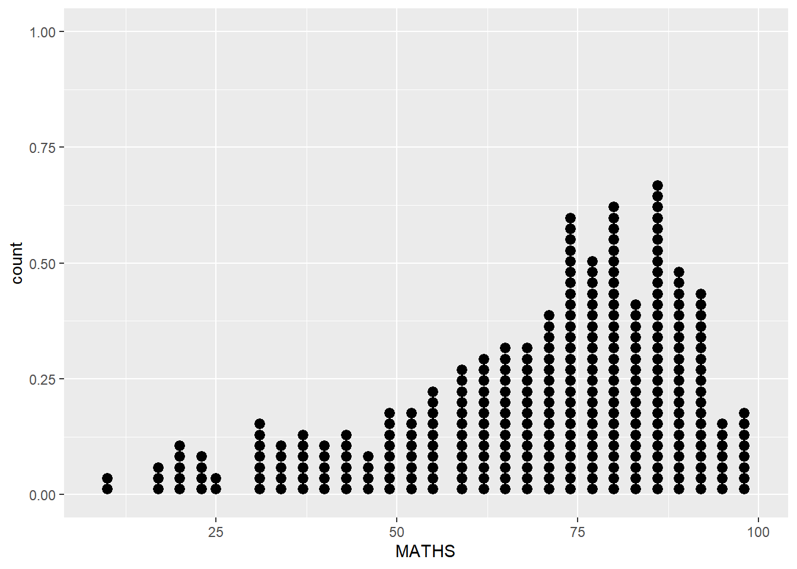
The scale_y_continuous() function removes the usefulness of the y-axis. Additionally, scale_x_continuous() is used for numeric data, while scale_x_discrete() or scale_y_discrete() are used for categorical data.
ggplot(data = exam_data, aes(x=MATHS)) +
geom_dotplot(binwidth = 2.5, dotsize = 0.5) +
scale_y_continuous(NULL, # remove the y-axis label
breaks = NULL) #remove the y-axis tick marks and scale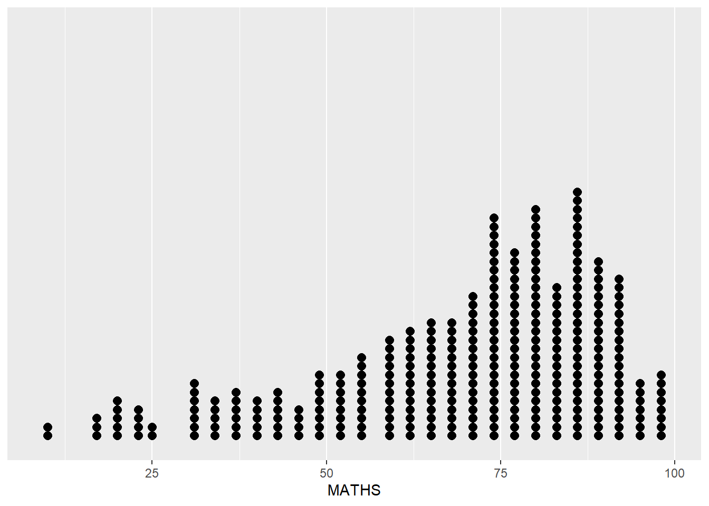
7.3 Geometric Objects: geom_histogram()
The code chunk below creates a histogram of Maths scores with default bin width 30.
ggplot(data=exam_data, aes(x=MATHS)) +geom_histogram()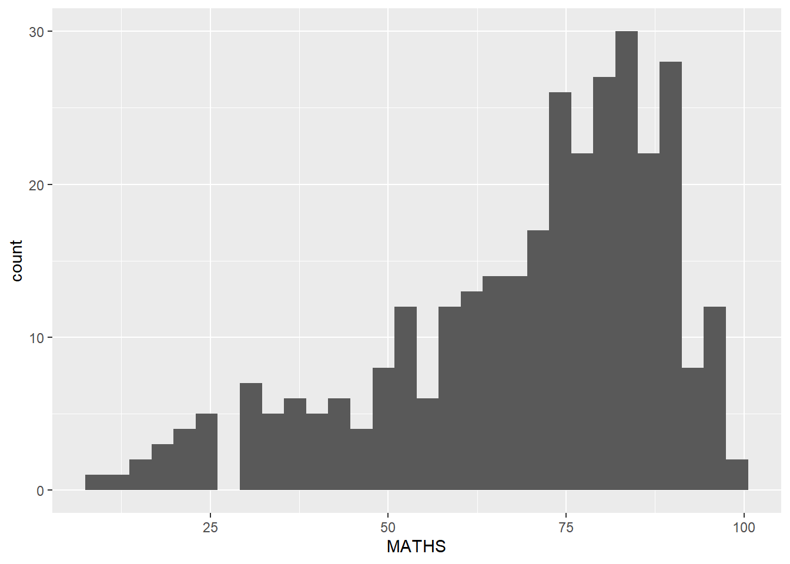
7.4 Modifying a Geometric Object by Changing geom()
In the code chunk below, the bins argument sets the number of bins to 20, the fill argument shades the histogram in light blue, and the colour argument changes the bar outlines to black.
ggplot(data=exam_data, aes(x=MATHS)) +
geom_histogram(bins = 20, fill = "lightblue", colour = "black")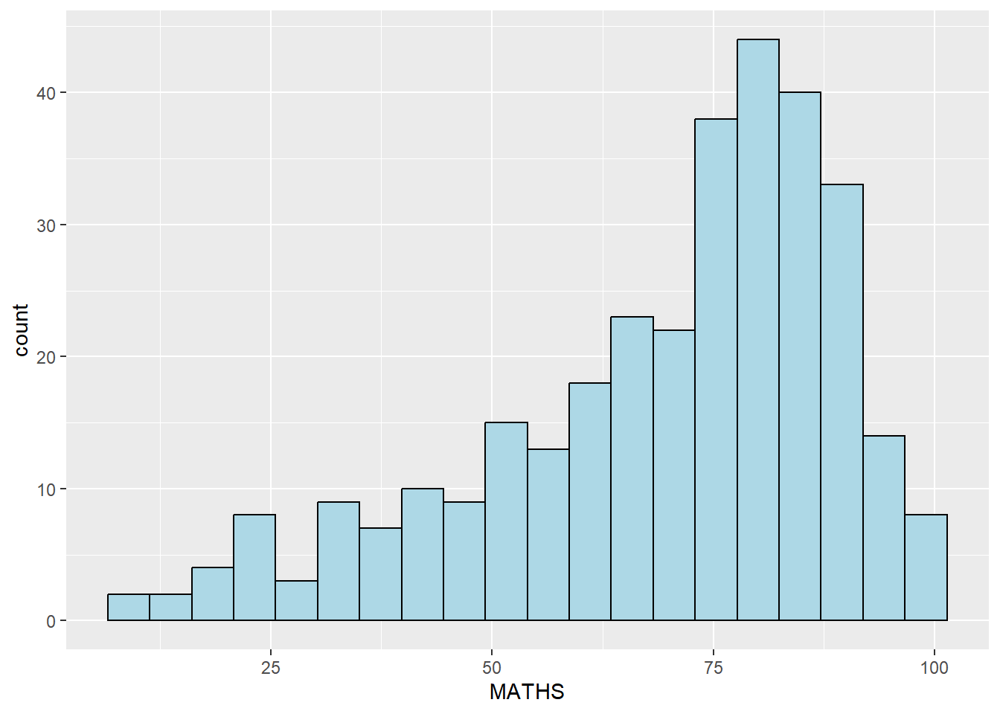
7.5 Modifying a Geometric Object by Changing aes()
Yes, it is similar to hue in Python (for example in seaborn).
In ggplot2, mapping fill, alpha, colour inside aes() splits the data into subgroups and assigns different colours to each group. This works in a similar way to hue (seaborn Python), which colours plots based on a categorical variable.
ggplot(data=exam_data, aes(x=MATHS,
fill = GENDER, colour = GENDER)) +
geom_histogram(bins = 20, colour = "gray30") #setting colour in geom will override the ourline colours in aes()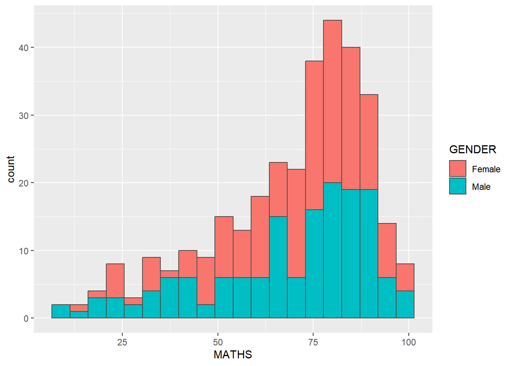
ggplot(data=exam_data, aes(x=MATHS,
fill = GENDER, colour = GENDER, alpha = GENDER)) +
geom_histogram(bins = 20) #setting colour in geom will override the ourline colours in aes()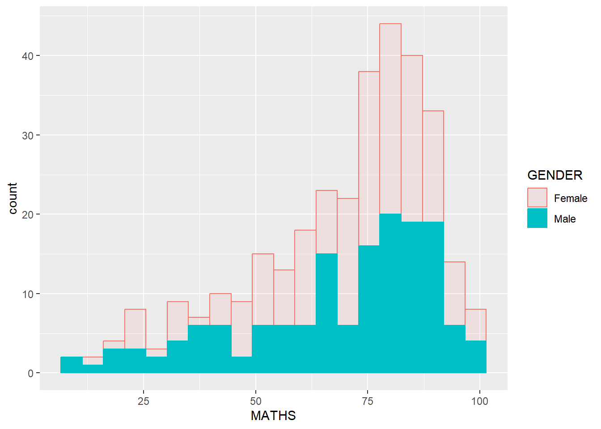
7.6 Geometric Objects: geom-density()
geom_density() plots a kernel density estimate, which is a smooth alternative to a histogram for continuous data. The code below displays the distribution of Maths scores using a density plot.
ggplot(data=exam_data, aes(x=MATHS)) +
geom_density()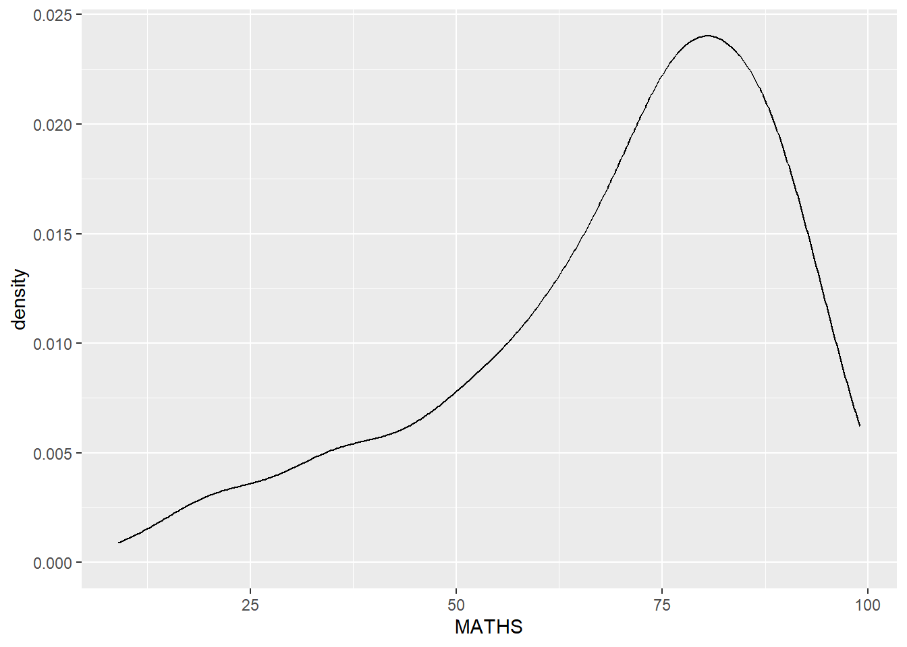
The code chunk below plots two kernel density curves by mapping colour or fill within aes().
ggplot(data=exam_data,
aes(x = MATHS, fill= GENDER)) +
geom_density()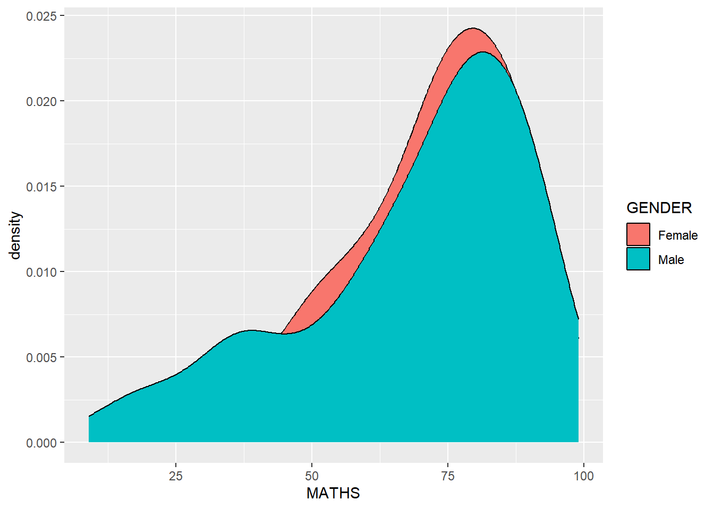
ggplot(data=exam_data,
aes(x = MATHS,
colour = GENDER)) +
geom_density()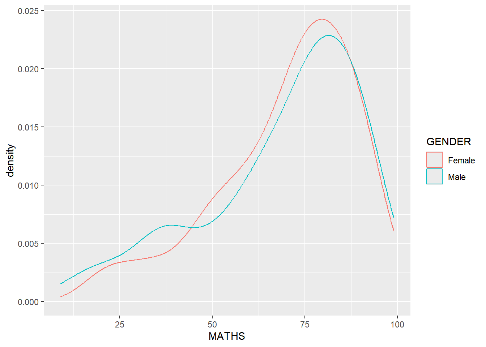
7.7 Geometric Objects: geom_boxplot()
A boxplot summarises the distribution of MATHS scores by GENDER, which is categorical on the x-axis.
ggplot(data=exam_data,
aes(y = MATHS,
x= GENDER)) +
geom_boxplot()
The code below shows a notched plot of Maths scores by gender. Notches in box plots help compare medians across groups. If the notches do not overlap, it suggests the medians are different.
ggplot(data=exam_data,
aes(y = MATHS,
x= GENDER)) +
geom_boxplot(notch=TRUE)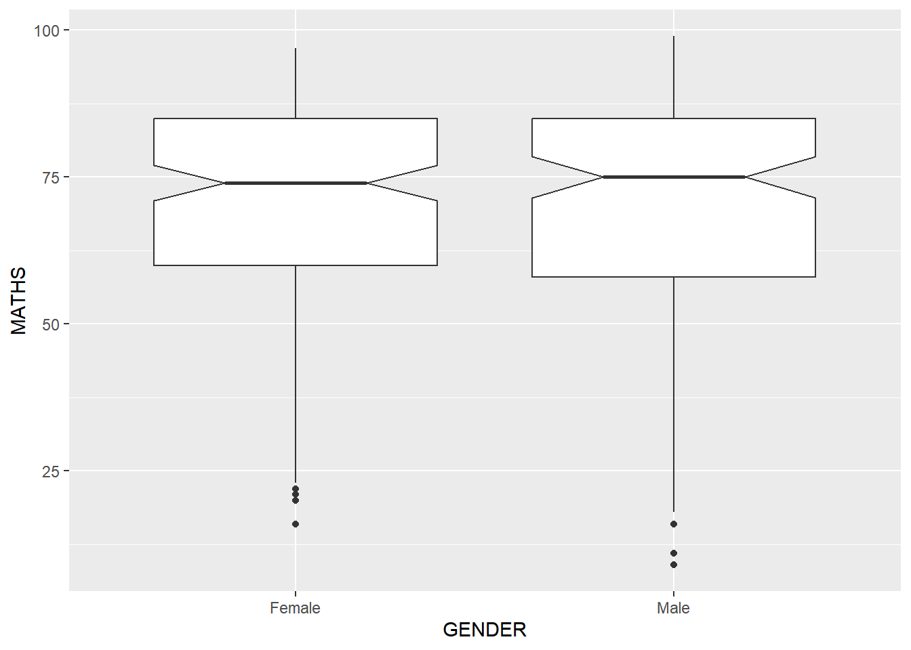
geom_line() is designed to connect points along a continuous or ordered x-axis. Here, GENDER is categorical, so drawing lines across it has no meaningful interpretation.
Mapping group = RACE forces ggplot2 to connect observations of the same race across gender categories, which results in arbitrary zig-zag lines that do not represent a valid trend.
ggplot(data=exam_data,
aes(y = MATHS,
x= GENDER)) +
geom_boxplot() +
geom_line(aes(group = RACE), colour = "#3366FF", alpha = 0.5)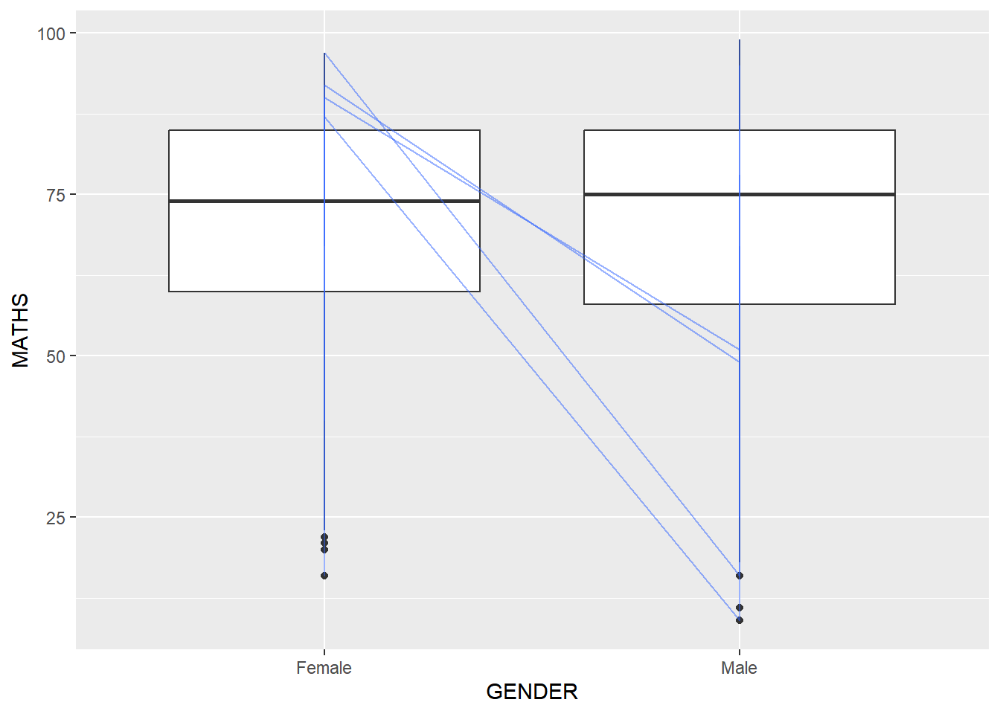
7.8 Geometric Objects: geom_violin()
geom_violin() creates violin plots for comparing multiple data distributions. By placing distributions side by side, it makes comparisons easier than overlapping density curves. The code below shows the distribution of Maths scores by gender using a violin plot.
In a violin plot, stat = “ydensity” controls how the shape of the violin is calculated, based on the distribution of the data along the y-axis.
ggplot(data=exam_data,
aes(y = MATHS,
x= GENDER,colour= GENDER)) +
geom_violin()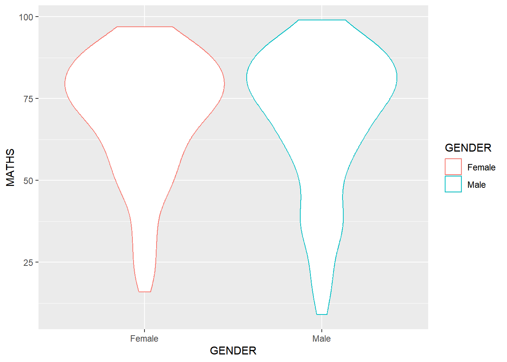
7.9 Geometric Objects: geom_point()
geom_point() used to create scatterplot.
ggplot(data=exam_data, aes(x=MATHS, y=ENGLISH)) +
geom_point() +
geom_abline(slope = 1, intercept = 0, colour = "blue")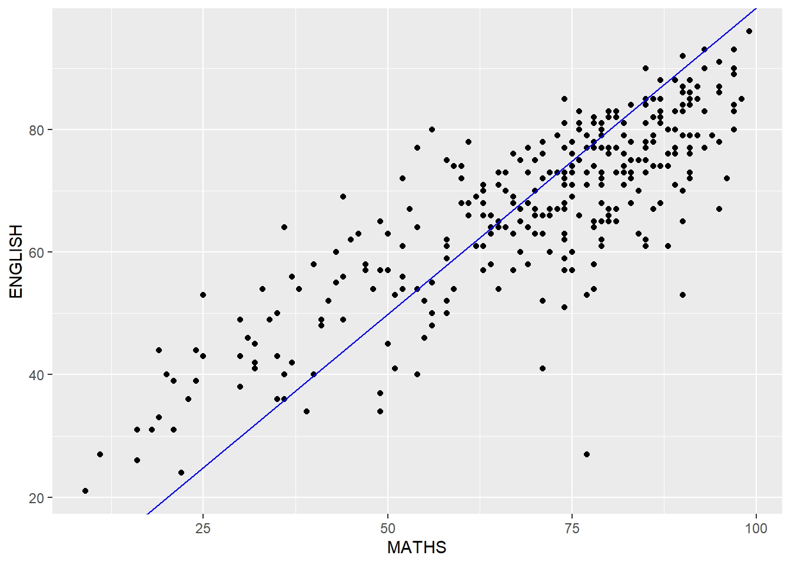
7.10 geom objects can be combined
The code chunk below plots the data points on the boxplots by using both geom_boxplot() and geom_point().
ggplot(data=exam_data,
aes(y = MATHS,
x= GENDER)) +
geom_boxplot() +
geom_point(position="jitter",
size = 0.5) 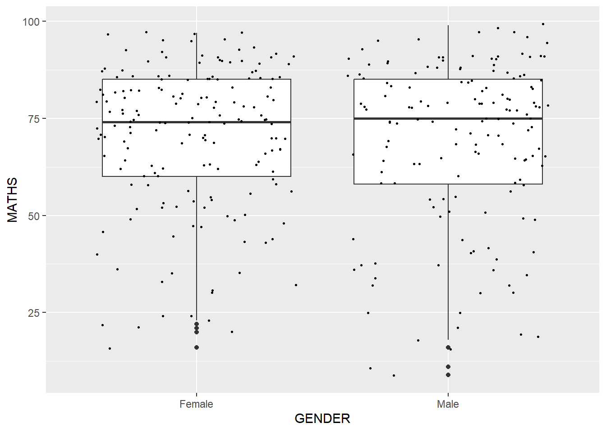
geom_point(position = "identity") plots all points at the exact same x-position for each gender category. Since GENDER is categorical, many points overlap completely. position = "identity" is suitable for continuous x-values. For categorical x-values, we should use jitter to avoid overplotting like the example above.
ggplot(data=exam_data,
aes(y = MATHS,
x= GENDER)) +
geom_boxplot() +
geom_point(position="identity",
size = 0.5) 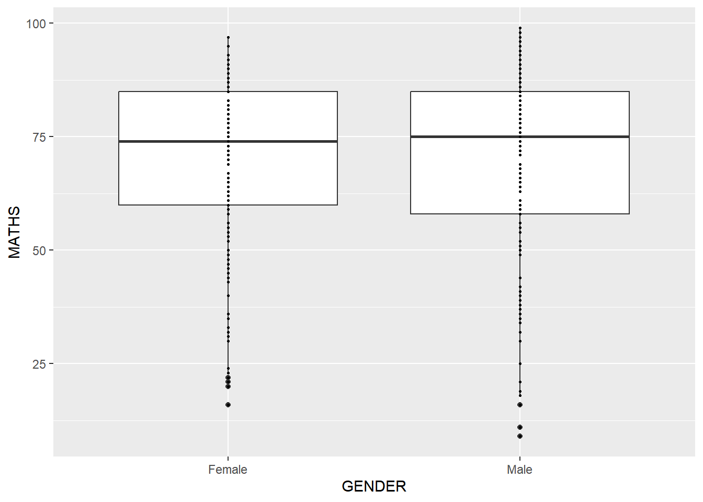
8 Essential Grammatical Elements in ggplot2: stat()
Statistical functions summarise or transform data, such as means, or confidence limits in a bar chart. They can be used by adding a stat_() function and overriding the default geom, or by adding a geom_() function and overriding the default stat.
8.1 Working with stat()
The plot does not display the means by default.
ggplot(data = exam_data, aes(y = MATHS, x = GENDER)) +
geom_boxplot()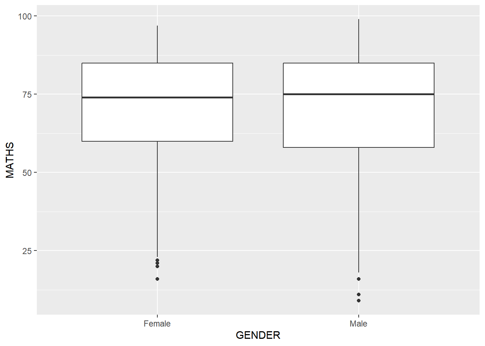
8.2 Working with stat: the stat_summary() method
The code below uses the fun argument to specify the “mean” and displays it as a “point” via the geom argument, with its size and colour set in stat_summary(). Some common geoms are “point”, “line”, “area”, “bar” and “ploygon”.
ggplot(data = exam_data, aes(x=GENDER, y = MATHS)) +
geom_boxplot() +
stat_summary(geom = "point",
fun = "mean",
colour = "red",
size = 4)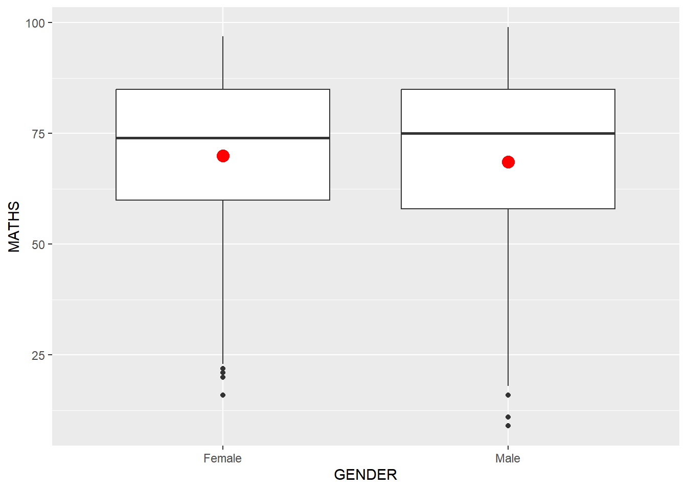
8.3 Working with stat: the geom() method
The code chunk below demonstrates the alternative approach using geom_point(). The point shape can be specified using integer numbers from 0 to 25, or by using single alphanumeric characters. fill argument can also be utilised under geom_point().
ggplot(data= exam_data,
aes(y=MATHS, x=GENDER)) +
geom_boxplot() +
geom_point(stat = "summary",
fun = "mean",
colour = "red",
size = 6,
shape = "*")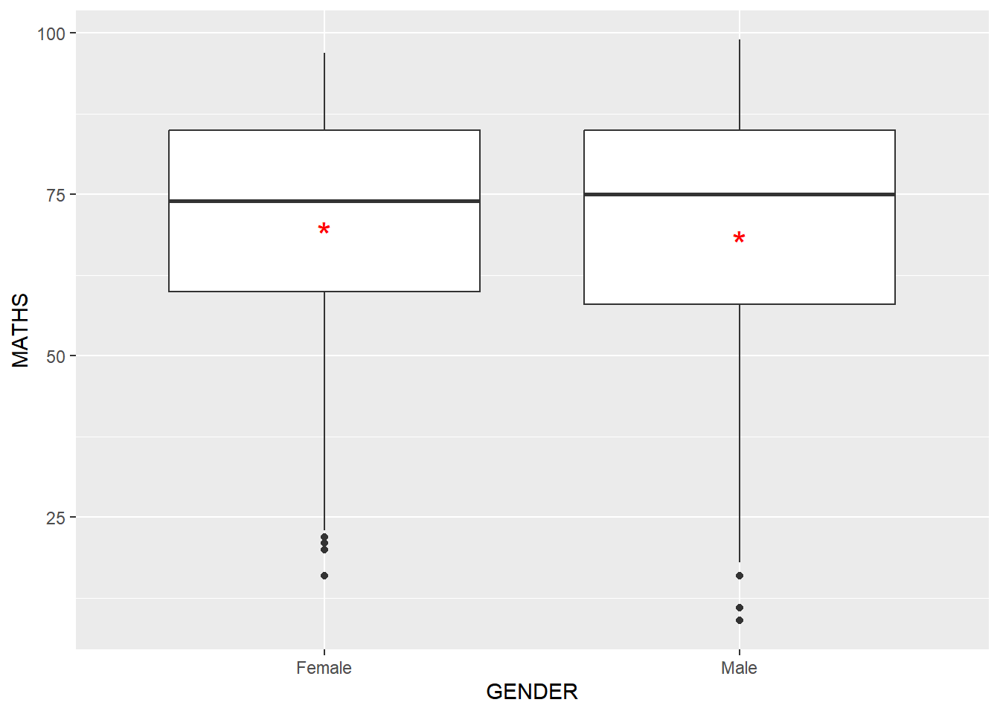
8.4 Adding a Best Fit Curve on a Scatterplot
The code below adds a best fit curve on the catterplot for Maths/English scores by adding a geom_smooth() with the method “loess” that stands for Local Polynomial Regression Fitting and used for observations less than 1k.
ggplot(data=exam_data, aes(x=MATHS, y=ENGLISH)) +
geom_point() + geom_smooth(linewidth=0.5)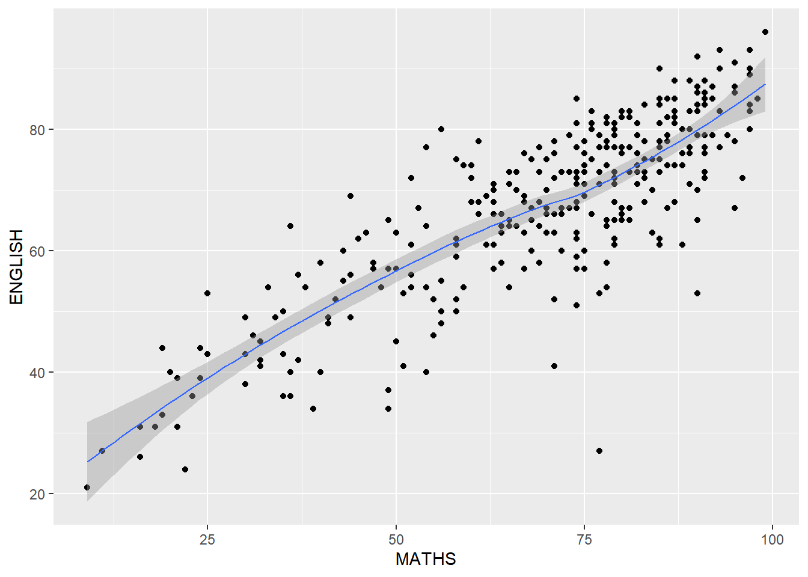
The other smoothing methods include “lm”, “glm”, “gam” etc. The chart below is smoothed using a linear regression model based on y ~ x.
ggplot(data = exam_data, aes(x=MATHS, y=ENGLISH)) +
geom_point() +
geom_smooth(method = lm, linewidth= 0.5)
9 Essential Grammatical Elements in ggplot2: Facets
Faceting creates small multiple plots, or trellis plots, where each panel shows a subset of the data. In ggplot2, this is done using facet_grid() or facet_wrap() to display multiple plots together.
9.1 Working with facet_wrap()
facet_wrap() converts a one-dimensional set of panels into a two-dimensional layout, which typically uses screen space more efficiently. The code below demonstrates a trellis plot created with facet_wrap().
ggplot(data=exam_data,
aes(x= MATHS)) +
geom_histogram(bins=20) +
facet_wrap(~ CLASS)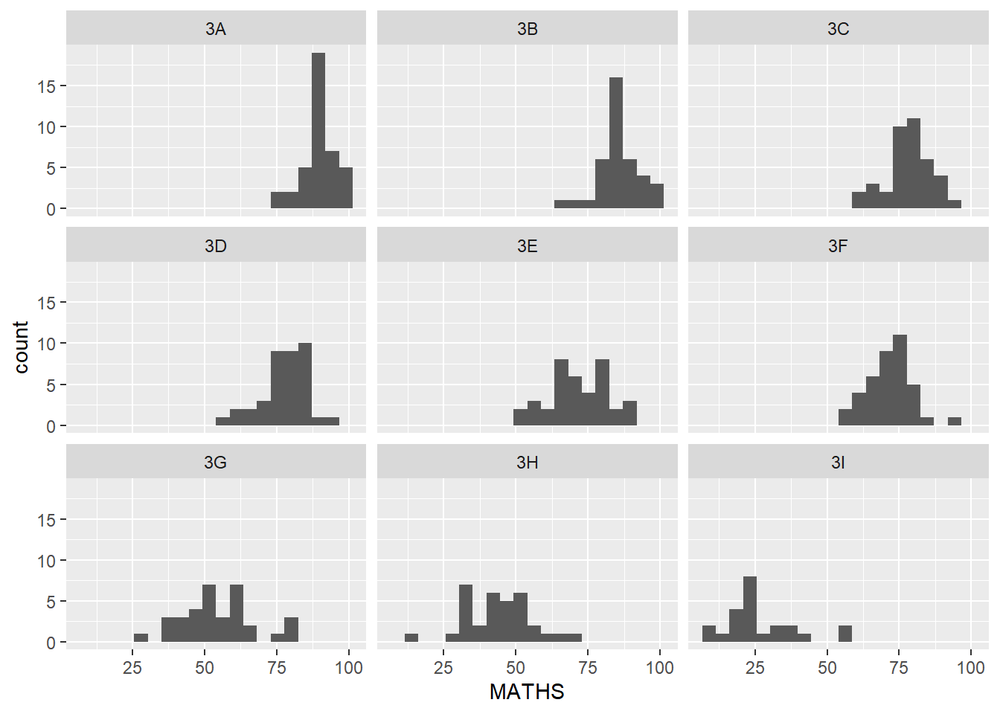
9.2 Working with facet_grid()
facet_grid() arranges panels in a matrix defined by row and column faceting variables. It works best when there are two discrete variables and all their combinations appear in the data.
ggplot(data= exam_data, aes(x=MATHS)) +
geom_histogram(bins=30) +
facet_grid(~ GENDER)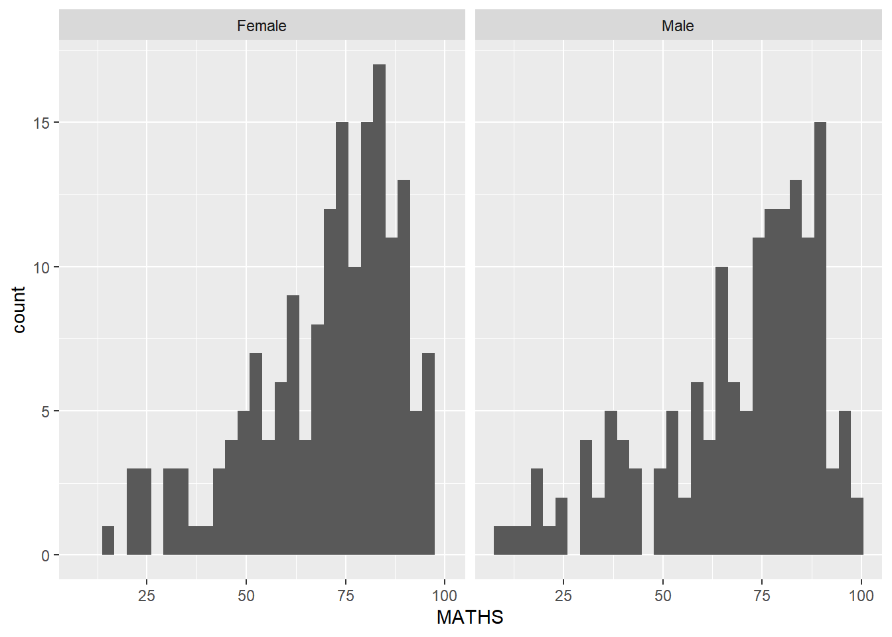
10 Essential Grammatical Elements in ggplot2: Coordinates
The coordinate functions determine how data values are translated into positions on the plotting plane. ggplot2 provides several coordinate systems, each suited to different visual needs. The main ones are:
coord_cartesian(): the default Cartesian coordinate system, where you specify x and y values (e.g. allows you to zoom in or out).coord_flip(): a Cartesian system with the x and y flipped.coord_fixed(): a Cartesian system with a “fixed” aspect ratio (e.g. 1.78 for a “widescreen” plot).coord_quickmap(): a coordinate system that approximates a good aspect ratio for maps.
10.1 Working with Coordinates
By default, a bar chart is displayed with the x-axis on the horizontal direction and the bars extending vertically upward, as shown in the example below.
ggplot(data=exam_data, aes(x=RACE)) + geom_bar()
The code chunk below flips the x-axis to y-axis.
ggplot(exam_data, aes(x=RACE)) + geom_bar() + coord_flip()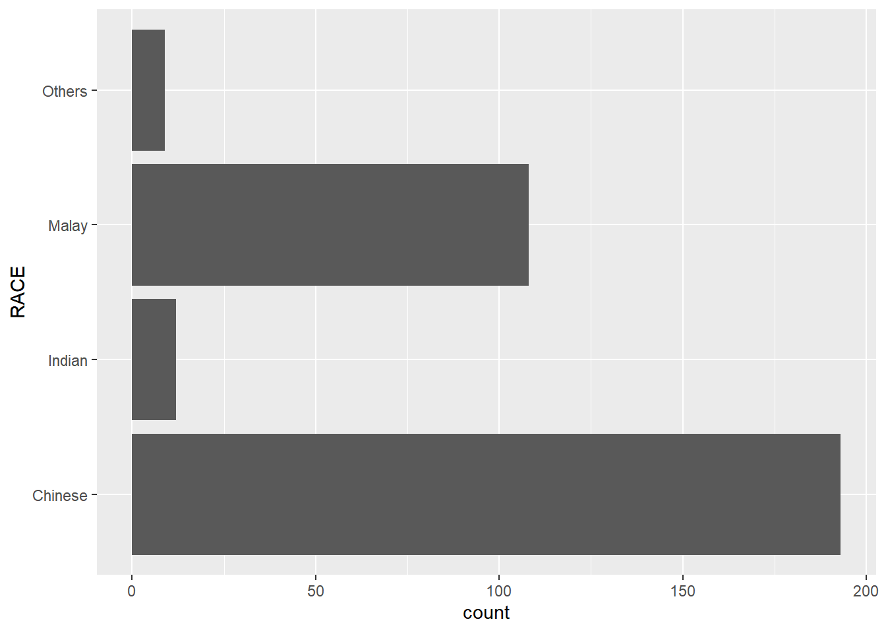
10.2 Chaning the y-axis and x-axis Range
The scatterplot appears slightly off-centre because the axes start at different minimum values. In this case, the y-axis starts at 20, while the x-axis starts at 0, so the plotting area is not symmetric around the origin.
This happens when ggplot2 automatically sets axis limits based on the range of the data rather than forcing both axes to start at the same value. As a result, the visual centre of the plot shifts, even though the data points themselves are correctly positioned.
ggplot(data=exam_data,
aes(x= MATHS, y=ENGLISH)) +
geom_point() +
geom_smooth(method=lm, size=0.5)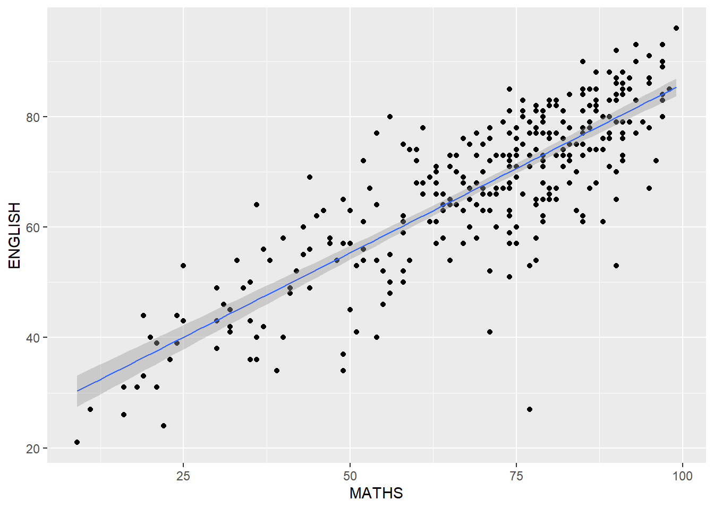
coord_cartesian() function is used to realign the axes so they starting from 0 to 100.
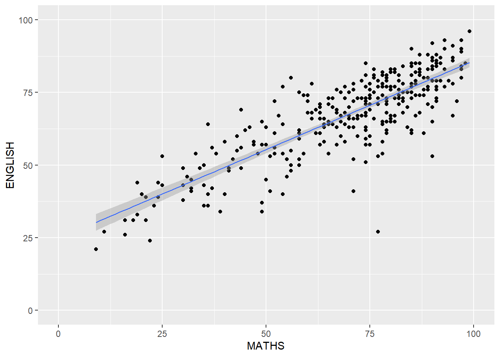
Adding an additional coordinate system replaces the existing one.
11 Essential Grammatical Elements in ggplot2: themes
Themes control the appearance of a graph rather than the data itself, such as background colour, fonts, gridlines, and label colours.
ggplot2 includes built in themes like theme_grey() (default), theme_bw(), and theme_classic(). Theme elements are grouped into lines, rectangles, and text.
11.1 Working wth themes
theme_grey() is the default theme with background colour in grey.
ggplot(exam_data, aes(x= RACE)) +
geom_bar() +
coord_flip() +
theme_grey()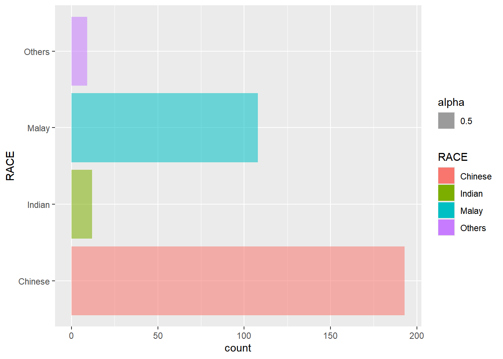
The colour theme could be changed to classic where background in white and gridlines removed by using theme_classic().
ggplot(exam_data, aes(x = RACE, fill = GENDER)) +
geom_bar(position = "dodge") +
coord_flip() +
theme_classic()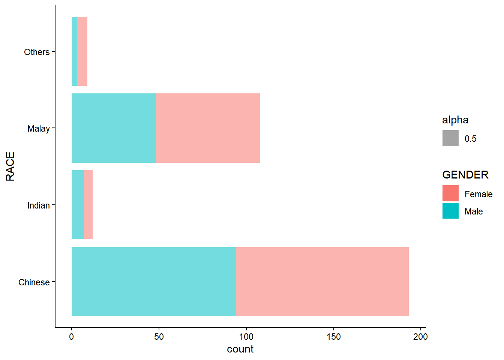
Or the theme can be set to minimal.
exam_data %>%
count(GENDER, ENGLISH)%>%
mutate(n = ifelse(GENDER== "Male", -n, n)) %>%
ggplot(aes(x = ENGLISH, y = n, fill = GENDER)) +
geom_col(width = 1) +
coord_flip() +
theme_minimal() +
scale_y_continuous(label=abs)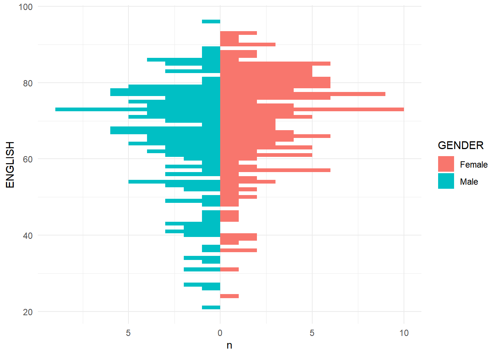
Or the theme can be set to light.
ggplot(exam_data, aes(x=RACE, y =MATHS)) +
geom_boxplot() +
stat_summary(geom="point",
fun =mean,
shape = 21,
fill = "red",
colour= "black", size =3) +
stat_summary(fun = mean, geom = "text",
aes(label = round(..y.., 0)),
hjust = -0.5, size = 3) +
coord_flip() +
theme_light()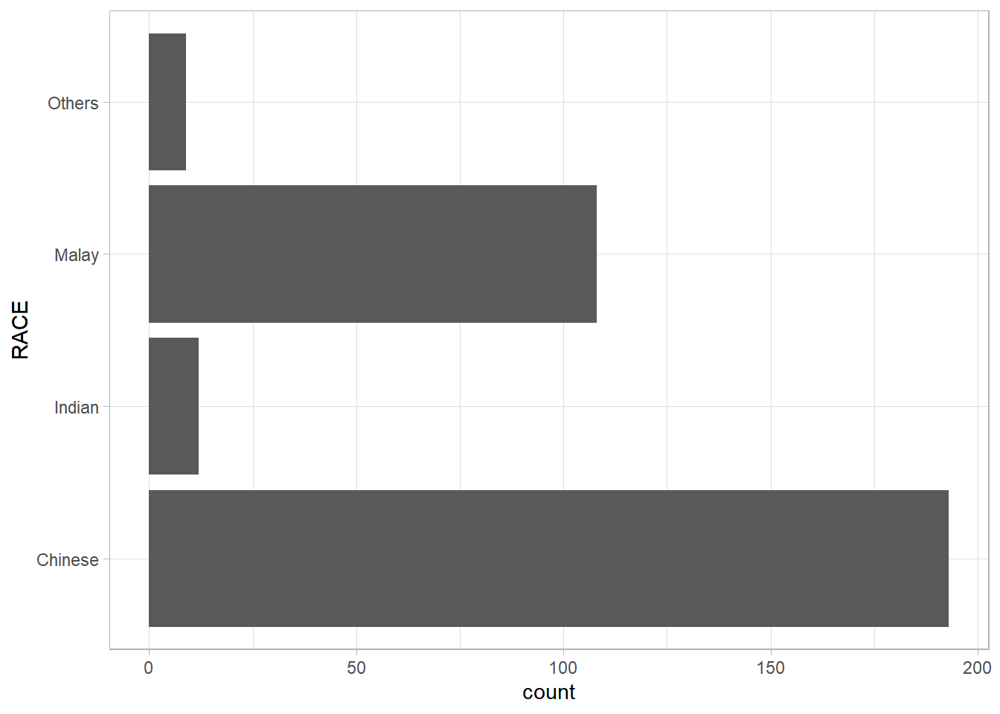
Or the theme can be set to test.
ggplot(exam_data, aes(x=CLASS,fill=RACE)) +
geom_bar() +
coord_flip() +
scale_fill_brewer(palette="Paired") +
theme_test()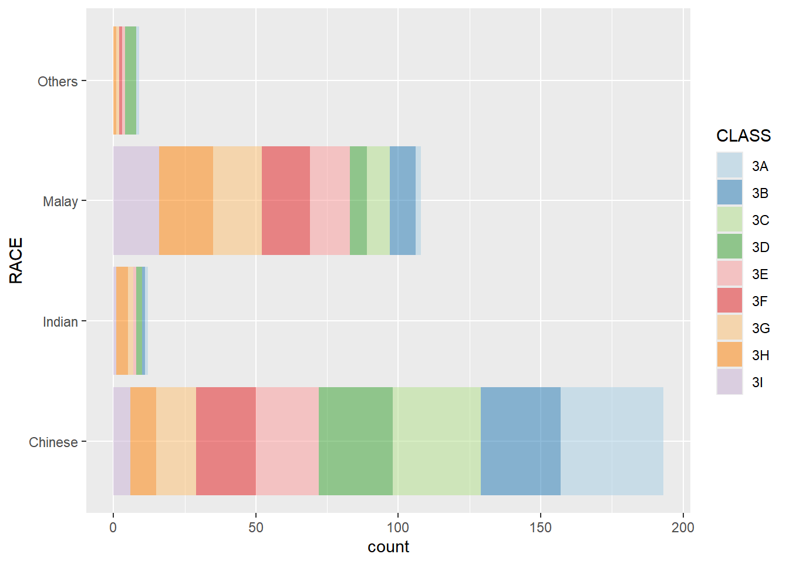
12 Reference
Kam, Tin Seong (2026). 1 A Layered Grammar of Graphics: ggplot2 methods. R for Visual Analytics.
Hadley Wickham (2010) “A layered grammar of graphics” Journal of Computational and Graphical Statistics, vol. 19, no. 1, pp. 3–28.
Hadley Wickham (2023) ggplot2: Elegant Graphics for Data Analysis. Online 3rd edition.
Winston Chang (2013) R Graphics Cookbook 2nd edition. Online version.
Healy, Kieran (2019) Data Visualization: A practical introduction. Online version
Learning ggplot2 on Paper – Components